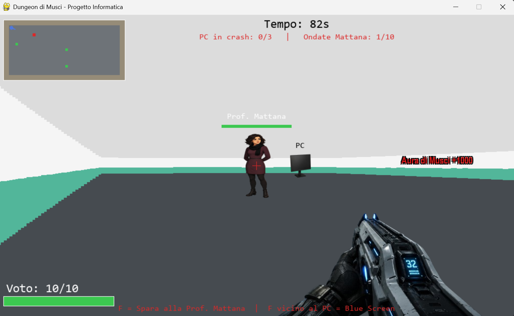
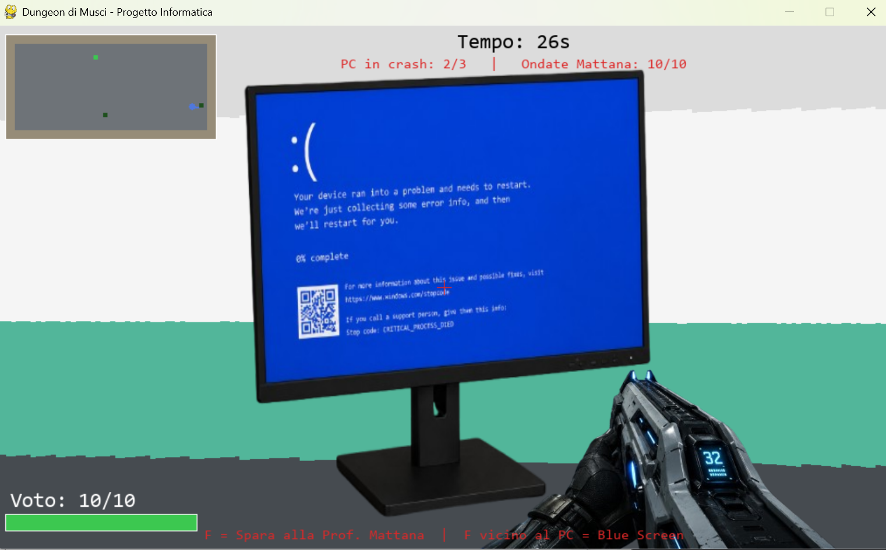
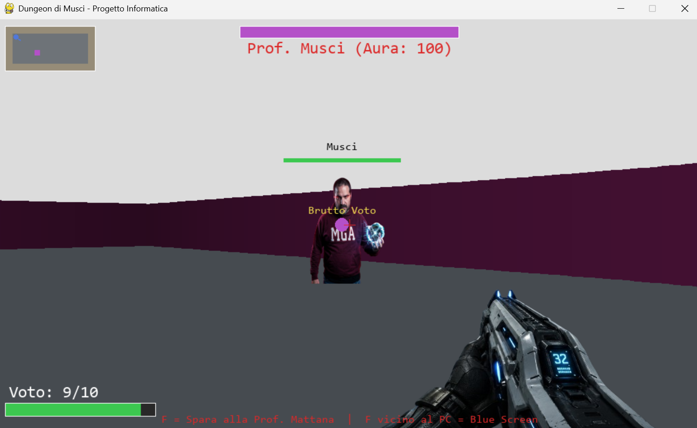
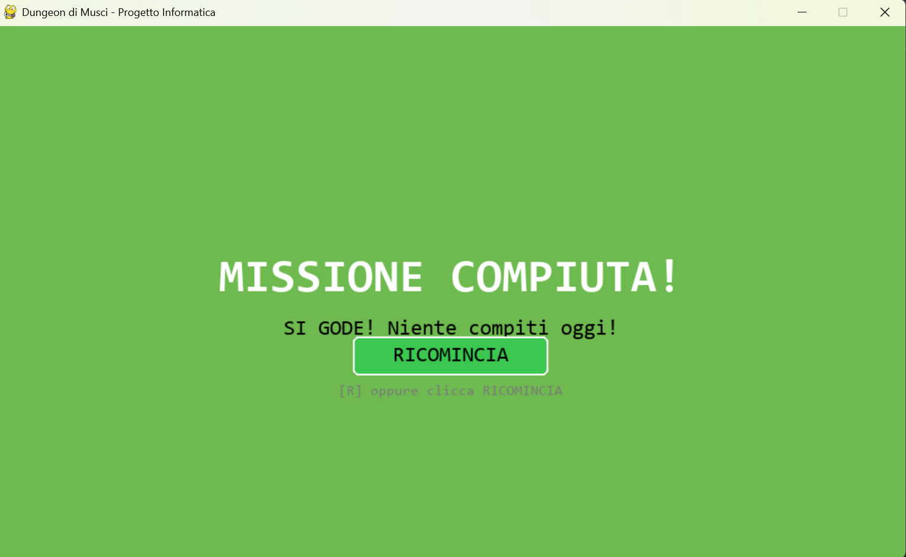

Idea del gioco
Il gioco si intitola Dungeon di Musci ed è uno sparatutto in prima persona in 3D basato sulla tecnica del raycasting, sviluppato in Python con la libreria Pygame.
Se dovessi spiegarlo a un amico, gli direi che all'inizio volevo fare una cosa gigante: un gioco fantasy super complicato chiamato Dungeon of Aldric, con 5 livelli generati a caso, un inventario pieno di oggetti, statistiche da gioco di ruolo, chiavi, porte e una barra della sanità mentale. Ho provato a programmare la cosa più complessa possibile dentro IDLE, ma è stato un disastro. Il codice era diventato lunghissimo, c'erano così tanti bug che non sapevo più dove mettere le mani e il gioco rallentava tantissimo.
Alla fine ho deciso di cambiare strada e di trasformare il gioco in qualcosa di più semplice da gestire, ma decisamente più unico e divertente: una parodia della nostra scuola! Nel gioco finale ci sono solo 2 livelli fatti a mano.
Obiettivo del giocatore
La storia è questa: il protagonista non ha nessuna voglia di fare i compiti. Per salvarsi, deve entrare a scuola e mandare in crash i 3 PC del laboratorio entro un tempo limite di 90 secondi. I PC si trovano in posizioni casuali nella mappa ogni volta che si ricomincia. Mentre cerca i computer, viene inseguito e preso a colpi dalla "Prof. Mattana" che pattuglia la classe — lei spara se è abbastanza vicina (tra 2 e 3 unità di distanza), e avvisa il giocatore con un audio di "attenzione" già da 5.4 unità di distanza, cioè esattamente 3 secondi prima di iniziare a sparare.
Se riesce a sabotare tutti e 3 i PC, parte una scena di testo (scritta lettera per lettera sullo schermo) dove viene beccato e spedito direttamente al Livello 2: la Boss Fight finale contro il Professor Musci in persona dentro un'arena scura con le pareti viola scuro. Il giocatore ha a disposizione un'arma per difendersi.
La metrica di salute del giocatore non è i classici HP ma un "Voto" che parte da 10: ogni colpo ricevuto toglie 1 punto Voto. Se il Voto arriva a 0, appare la schermata BOCCIATO!. Il boss invece ha una metrica di "Aura" che parte da 100 e scende di 10 a ogni colpo: vince chi porta l'Aura di Musci a zero.
Elementi di originalità
Questo gioco è speciale perché non si trova da nessuna parte online un tutorial per fare una parodia scolastica del genere. Invece dei soliti mostri fantasy o dei cloni di Pacman, i nemici sono i nostri professori. Dal punto di vista tecnico ci sono poi cose molto avanzate che ho dovuto imparare quasi da zero:
Motore 3D fatto da zero
La grafica in prima persona non usa pacchetti pronti. Proietta 180 raggi matematici (raycasting), come nei vecchi giochi anni '90 stile Wolfenstein 3D. Le pareti della scuola hanno persino un effetto bicolore: bianco in alto e verde scolastico (#52b69a) in basso, come le vere pareti della nostra aula.
Graffiti in prospettiva 3D
Sulle pareti ci sono tre scritte: "Viva l'informatica!", "Aura di Musci +1000" e "La A in Alom sta per aura". Queste scritte rimpiccioliscono o ingrandiscono in tempo reale in base alla distanza, seguendo la prospettiva 3D, e sono posizionate matematicamente nella zona bianca della parete.
Audio misto: sintetizzato + file esterni
I suoni base (sparo, danno, crash PC) vengono generati al volo calcolando onde matematiche. Ci sono però anche tre file MP3 reali: attenzione.mp3 (avvisa l'arrivo di prof Mattana), allarme.mp3 (PC sabotato) e arrabiato.mp3 (Attenzione, prof Musci è arrabiato).
Tema scolastico integrato nel gameplay
Non è solo grafico: il sistema di salute si chiama "Voto", la salute del boss si chiama "Aura", e i proiettili nemici sono testi reali come "Brutto Voto", "Nota sul Registro", "Chiamare i genitori" e "C.d.C." — cose che capitano davvero.
Effetti visivi dinamici
Quando si viene colpiti lo schermo fa un flash rosso e trema (screen shake). La scena di transizione tra i livelli fa un flash bianco. La schermata di vittoria cambia colore in tempo reale con una funzione seno. Il timer cambia colore: nero → giallo (≤20 sec) → rosso lampeggiante (≤10 sec).
IA sincrona con l'audio
Mattana è calibrata matematicamente: la sua velocità (0.8 unità/sec) e la soglia di fuoco (distanza 2–3) fanno sì che l'audio "attenzione" parta esattamente 3 secondi prima che inizi a sparare. Musci invece aspetta 2 secondi, urla "arrabiato" e solo poi apre il fuoco.
Analisi e progettazione
3.1 Regole del gioco
Movimento: Il giocatore si muove in prima persona usando i tasti W, A, S, D (o le frecce) per camminare e muove lo sguardo con il mouse o con le frecce destra/sinistra. I movimenti sono fluidi ed è stato inserito lo scivolamento sui muri (il codice controlla separatamente l'asse X e l'asse Y) per non incastrarsi.
Sistema Voto (salute del giocatore): Il giocatore parte con 10 Voto. Ogni volta che un proiettile nemico lo colpisce, perde 1 punto Voto e lo schermo fa un flash rosso più uno screen shake. Se il Voto arriva a 0 viene chiamata la funzione start_game_over() che suona tre note calanti e mostra la schermata BOCCIATO.
Livello 1 — La Classe
- Timer 90 secondi che scorrono. Allo scadere: Game Over immediato.
- 3 PC Le posizioni sono scelte casualmente a ogni partita. Bisogna avvicinarsi (distanza < 1.0 unità) e premere F. Il PC cambia immagine (da normale a schermata blu) e il contatore sale.
- Mattana Appare da un punto casuale ad almeno 5.0 unità di distanza dal giocatore. Ha 2 HP, si muove verso il giocatore, e spara quando è a 2–3 unità di distanza con un cooldown di 2 secondi. Avvisa con l'audio "attenzione" da 5.4 unità di distanza (3 secondi prima di iniziare a sparare). Ci sono 10 ondate totali: ogni volta che Mattana viene sconfitta, ne arriva subito un'altra da un punto casuale.
- Proiettili I proiettili del giocatore viaggiano a 7.0 unità/sec e hanno una hitbox di 0.4 unità. Colpire Mattana la abbatte dopo 2 colpi. I proiettili nemici viaggiano a 3.5 unità/sec.
Transizione: Dopo il terzo PC, il gioco cambia stato in end_cutscene: i movimenti si bloccano, appare una finestra di testo (scritta lettera per lettera a 45 caratteri/secondo) con 3 messaggi. Poi parte un flash bianco da 1.5 secondi e si entra nel Livello 2.
Livello 2 — Boss Fight
- Arena Mappa più piccola (12×6 celle) con pareti viola scuro sfumate in base alla distanza.
- Musci Parte dalla posizione B nella mappa. Si avvicina per 2 secondi, parte l'audio "arrabiato" e inizia a sparare ogni 1.8 secondi. Se il giocatore si avvicina troppo (distanza < 3.5 unità), il boss si allontana.
- Aura di Musci Il boss ha 100 punti Aura. Ogni colpo del giocatore toglie 10 Aura. La barra viola in cima allo schermo mostra quanto ne rimane.
- Proiettili boss Testi di sanzione scelti a caso tra "Brutto Voto", "Nota sul Registro", "Chiamare i genitori" e "C.d.C." — disegnati in giallo brillante sopra un cerchio viola per essere visibili nell'arena scura.
Condizioni di fine partita
💀
BOCCIATO!Voto = 0 oppure timer scaduto
"Debito Totale in Informatica"
🎉
MISSIONE COMPIUTA!Aura di Musci = 0
"SI GODE! Niente compiti oggi!"
In entrambe le schermate finali basta premere il tasto R oppure cliccare il pulsante verde "RICOMINCIA" per azzerare tutto e ricominciare dal primo livello. (Il bug del click sul pulsante è stato uno degli ultimi fix — lo spiego nel diario di bordo.)
Struttura del programma
Il programma è scritto in un unico file Python e si divide in sezioni logiche molto chiare:
Viene avviata Pygame. Per evitare crash sui PC della scuola (che spesso non hanno le casse collegate), l'inizializzazione del mixer audio è dentro un blocco try-except. Se l'audio fallisce, il gioco imposta HAS_SOUND = False e gira in modalità silenziosa senza bloccarsi.
La funzione make_tone crea suoni calcolando onde matematiche (quadrate, sinusoidali o rumore bianco). La classe SoundBank costruisce tutti i suoni sintetizzati all'avvio e carica i tre file MP3 esterni (attenzione.mp3, allarme.mp3, arrabiato.mp3) con un altro try-except interno.
Gestisce le pareti dei livelli leggendo liste di stringhe (dove # è muro, P è partenza, B è il boss). Nel Livello 1, i 3 PC vengono posizionati in punti casuali scelti tra le celle libere all'avvio. Contiene anche la griglia visited per la minimappa.
Contengono l'IA dei professori. Mattana si muove verso il giocatore se lontana, suona l'avviso da 5.4 unità, spara da 2–3 unità con cooldown di 2 secondi. Musci si avvicina per 2 secondi, urla, poi rimane a distanza di combattimento e lancia le sanzioni testuali ogni 1.8 secondi.
Gestisce i colpi di giocatore e nemici. I proiettili amici viaggiano a 7.0 unità/sec, quelli nemici a 3.5. Controlla le collisioni con i muri (il proiettile muore) e con i personaggi (danno). I proiettili del boss hanno un attributo label con il testo della sanzione.
Tiene traccia delle coordinate del giocatore, dell'angolo della visuale, dei punti Voto (max 10) e del cooldown dello sparo (0.18 secondi tra un colpo e l'altro).
Contiene tutto il resto: caricamento immagini (gun.png, pc.png, crashed_pc.png, enemy.png, musci.png), reset della partita, gestione dei movimenti, dei timer, dei cutscene, degli stati di gioco (game_start_delay → intro_cutscene → level1 → end_cutscene → transition → level2 → victory/gameover) e tutto il rendering.
Le funzioni di disegno fondamentali dentro la classe Game sono:
- cast_rays Proietta 180 raggi per coprire la visuale del giocatore, calcola la distanza e disegna strisce verticali di muro in 3D. Se boss_mode è attivo, colora i muri di viola scuro sfumato. Restituisce lo zbuf (distanze dei muri per ogni raggio).
- draw Raccoglie tutti gli oggetti 3D in una lista render_queue con le loro distanze, li ordina dal più lontano al più vicino (Z-sorting) e li disegna in ordine di priorità: graffiti (+0.05 di offset, sempre dietro), poi PC, poi nemici (-0.05 di offset, sempre davanti). Poi disegna il HUD 2D sopra a tutto.
- draw_hud Disegna la barra del Voto, il timer con i colori dinamici (nero → giallo a 20 sec → rosso a 10 sec), il contatore PC, la barra Aura del boss e il mirino rosso.
Pseudocodice del ciclo principale
# ── AVVIO ──────────────────────────────────────────────── inizializza Pygame, audio (try-except), SoundBank, finestra carica immagini PNG (gun, pc, crashed_pc, enemy, musci) reset() → stato = "game_start_delay" (1.2 sec di attesa) # ── CICLO DI GIOCO ─────────────────────────────────────── mentre gioco_in_corso: # 1. Input leggi tastiera e mouse (pygame.event) se WASD/frecce → handle_movement(dt) [con wall sliding] se F vicino a PC → try_infect_pc() → BSOD + contatore se F lontano da PC → try_shoot() [cooldown 0.18 sec] se click tasto sx su RICOMINCIA → reset() se R nella schermata finale → reset() # 2. Aggiornamento stato (in base allo stato corrente) se game_start_delay: countdown 1.2 sec → intro_cutscene se intro_cutscene: update_cutscene(dt) → level1 se level1: decrementa timer (90 sec) aggiorna EnemyProfMattana (IA, sparo, audio) aggiorna tutti i proiettili se pcs_destroyed >= 3 → end_cutscene se timer <= 0 oppure Voto <= 0 → gameover se end_cutscene: update_cutscene(dt) → transition (flash 1.5 sec) se level2: aggiorna BossMusci (avvicinamento, urlo, sparo sanzioni) aggiorna tutti i proiettili se Aura Musci <= 0 → win() → victory se Voto <= 0 → start_game_over() → gameover # 3. Rendering (ogni frame) zbuf = cast_rays(boss_mode) # muri 3D + sfondo build render_queue # graffiti, PC, nemici, proiettili sort(render_queue, distanza ↓) # Z-sort: lontano → vicino draw ogni oggetto # clip con zbuf per i muri draw_hud() # Voto, timer, mirino, ecc. draw damage_flash (rosso) # se colpito di recente screen_shake() # offset casuale ±4px pygame.display.flip()
Schema a blocchi del rendering pipeline
Strutture dati principali
- Map.grid Lista di liste di interi (0 = pavimento, 1 = muro) generata leggendo le stringhe dei livelli.
- map.pc_positions Lista di triple
[x, y, destroyed]— una per ognuno dei 3 PC casuali del Livello 1. - render_queue Lista di tuple
(distanza, tipo, oggetto)ordinata per Z-sort a ogni frame. - zbuf[] Array con la distanza del muro per ognuno dei 180 raggi — impedisce agli sprite di disegnarsi davanti ai muri.
- SoundBank.sounds Dizionario
nome → pygame.Soundcon tutti i suoni (sintetizzati + MP3) pre-caricati all'avvio. - army[] Lista di istanze
EnemyProfMattanaattive — massimo una alla volta, sostituita ondata dopo ondata fino a 10 totali. - projectiles[] / enemy_projectiles[] Due liste separate per i proiettili del giocatore e dei nemici, aggiornate ogni frame.
Sviluppo e uso dell'AI
4.1 Diario di bordo
cast_rays(). Il risultato era in 3D ma le strisce avevano la distorsione a "effetto fisheye". L'AI mi ha spiegato che bisognava moltiplicare la profondità per il coseno dell'angolo relativo al giocatore (corrected = depth * cos(player_angle - ray_angle)). Una volta capito questo, il 3D sembrava finalmente quello di un gioco vero.Map e i layout dei due livelli come stringhe di testo. Ho poi aggiunto la minimappa con la griglia visited e il punto blu del giocatore con la linea di direzione. Il problema iniziale era che la minimappa mostrava tutto il livello dall'inizio invece di scoprirsi durante l'esplorazione — poi ho deciso di lasciare la mappa sempre visibile con reveal_full_minimap() perché con il timer di 90 secondi il giocatore ha già abbastanza stress senza cercare i PC al buio.walkable(nx, self.y) e walkable(self.x, ny)) e di sistemare le collisioni dei proiettili amichevoli distanziando la partenza del colpo dal centro del giocatore. Ho anche dovuto aggiungere la normalizzazione del vettore di movimento per evitare che diagonali andasse più veloce della normale.load_image() che usa try-except per non crashare se un file manca. Ho scritto draw_world_sprite() con il calcolo dell'angolo con atan2 per posizionare gli sprite sullo schermo in base alla direzione del giocatore, la scalatura in base alla distanza e il clip con lo zbuf per nascondere gli sprite dietro i muri. Ho poi aggiunto la barra HP verde/rossa sopra agli sprite dei nemici.make_tone() con tre tipi di onda (sinusoidale, quadrata, rumore bianco). Ho poi costruito la SoundBank con tutti i suoni necessari: lo sparo (onda quadra ad alta frequenza), il danno (rumore bianco), i tre accordi calanti del game over, il suono del PC in crash e il loop del boss. Tutto dentro un try-except per il caso in cui l'audio non funzioni. Infatti, proprio oggi a scuola ho provato a lanciare il gioco dal PC di uno studente e l'applicazione è andata in crash perché non era collegato alcun dispositivo di output audio.BOSS_WALL_COL = (80, 20, 60) e modificato cast_rays() per applicare una sfumatura basata sulla distanza in modalità boss. Ho anche aggiunto il boss loop musicale con SFX.play("boss_loop", 0.3, loops=-1).draw_graffiti(). La dimensione del testo dipende dalla distanza (size = max(18, min(54, int(32/dist*4.5)))) e la posizione verticale è calcolata in modo da stare nella zona bianca della parete. Per risolvere il problema dell'overlapping ho implementato la render_queue con Z-sorting e gli offset di distanza (+0.05 per i graffiti, −0.05 per i nemici).SoundBank con un try-except separato. Ho poi calibrato Mattana in modo che l'audio "attenzione" parta esattamente 3 secondi prima che lei entri nel range di fuoco (5.4 unità = 3 sec × 0.8 velocità + distanza di fuoco 3.0). Ho anche aggiunto lo screen shake (shake_time, offset ±4px) sia per i colpi ricevuti che per lo sparo del giocatore.• Spawn range di Mattana — ho aggiunto il controllo
hypot >= 5.0 in get_random_spawn_point() così Mattana non appare mai direttamente accanto al giocatore.
• Cooldown di fuoco di Mattana — aumentato di 1 secondo esatto (da 1.0 a 2.0) per rendere il combattimento meno caotico.
• Intro del boss — Musci ora si avvicina per 2 secondi, poi si ferma, urla "arrabiato" e solo dopo inizia a sparare. Questo rende l'ingresso del boss molto più cinematografico.
• Sistema Voto/Aura — ho convertito gli HP classici in "Voto" (giocatore, max 10) e "Aura" (boss, max 100, −10 a colpo). Questo rende il tema scolastico integrato nel gameplay e non solo nella grafica.
• Priorità Z-ordering — fissata la gerarchia definitiva: graffiti sempre dietro (offset +0.05), PC in mezzo, nemici sempre davanti (offset −0.05).
• Colori UI — tutti i testi operativi ("PC in crash", "Ondate Mattana", "F per sparare") portati in rosso brillante. Timer con cambio colore dinamico (nero → giallo a 20 sec → rosso a 10 sec). Proiettili del boss in giallo brillante su cerchio viola. Mirino cambiato da nero a rosso.
• Bug del pulsante RICOMINCIA — ho dovuto aggiungere un rilevamento esatto delle coordinate del click, con un offset di 70px per la schermata di game over e 50px per quella di vittoria, per far corrispondere il
Rect alla posizione reale del pulsante disegnato.
4.2 Modalità di utilizzo dell'Intelligenza Artificiale
Gli strumenti usati: Cursor Claude Gemini
L'AI è stata fondamentale perché programmare un motore geometrico 3D a raggi da soli in terza superiore è quasi impossibile, soprattutto considerando che non avevo seguito bene le spiegazioni all'inizio. Ho usato l'AI per:
Scrivere le formule matematiche: come i calcoli dei seni e coseni per i raggi in cast_rays(), la correzione del fisheye con il coseno dell'angolo relativo, e il calcolo dell'angolo con atan2 per capire dove orientare gli sprite dei professori sullo schermo in base alla posizione del giocatore.
Risolvere i crash: incollando gli errori che IDLE stampava sulla console e facendomi spiegare quale variabile o indice fosse fuori posto. Esempio di prompt usato:
Adattare la logica scolastica: dando indicazioni precise su come modificare il codice per la parodia. Esempio:
Sincronizzazione audio-gameplay: ho chiesto all'AI di calcolare la distanza esatta (5.4 unità) a cui Mattana deve suonare l'avviso perché il suono finisca esattamente quando lei entra nel range di fuoco, in base alla sua velocità (0.8 unità/sec) e alla distanza di fuoco (3.0 unità). Per Musci invece lo stesso ragionamento con i 2 secondi di approccio prima dell'urlo.
Come ho modificato il codice generato dall'AI: ho rinominato quasi tutte le variabili dal generico inglese ai nomi scolastici specifici (hp → voto, enemy → Prof. Mattana, ecc.). Ho dovuto leggere il codice riga per riga ogni volta che l'AI aggiungeva qualcosa, perché quasi sempre si rompeva qualcos'altro e saltava fuori un nuovo errore. Ho capito quali parti facevano cosa proprio durante questo processo di debug, anche se ammetto di aver usato l'AI in modo abbastanza dipendente, specialmente all'inizio.
Test e risultati
Ho testato il gioco passo dopo passo lanciandolo direttamente da IDLE dopo ogni modifica, controllando che ogni parte rispettasse le regole stabilite in fase di progettazione.
| # | Azione eseguita | Comportamento atteso | Risultato |
|---|---|---|---|
| 01 | Avvicinarsi a un PC (distanza < 1.0) e premere F | Il PC mostra la schermata blu (BSOD), il contatore "PC in crash" sale, si sente il suono | SUPERATO |
| 02 | Premere F lontano da tutti i PC | Il giocatore spara un proiettile (suono di sparo, recoil e screen shake) | SUPERATO |
| 03 | Essere colpiti dal proiettile della Prof. Mattana | Il Voto scende di 1, schermo fa flash rosso e screen shake, suono di danno | SUPERATO |
| 04 | Portare il Voto a 0 venendo colpiti 10 volte | Gioco passa allo stato "gameover", suonano 3 note calanti, schermata nera "BOCCIATO!" | SUPERATO |
| 05 | Far scadere i 90 secondi senza sabotare tutti i PC | Stesso effetto del game over per vita a zero | SUPERATO |
| 06 | Sabotare il terzo PC | Si blocca il gioco in end_cutscene, appare il testo scritto lettera per lettera, poi flash bianco e Livello 2 | SUPERATO |
| 07 | Colpire il Prof. Musci 10 volte (Aura da 100 a 0) | Il boss scompare, schermata verde animata "MISSIONE COMPIUTA!" | SUPERATO |
| 08 | Premere R nella schermata finale (sia vittoria che game over) | Reset istantaneo: Voto torna a 10, timer a 90, PC diventano tutti non-crashati, nemici e proiettili cancellati | SUPERATO |
| 09 | Cliccare il pulsante verde "RICOMINCIA" con il mouse | Stessa funzione del tasto R — prima non funzionava (bug degli offset), ora sì | SUPERATO |
| 10 | Avviare il gioco su un PC senza casse audio collegate | Il gioco deve partire in modalità silenziosa senza crash (try-except sull'inizializzazione del mixer) | SUPERATO |
5.2 Bug e problemi noti non risolti
Anche se il gioco è stabile e si gioca dall'inizio alla fine senza crash, ci sono dei piccoli difetti grafici che non sono riuscito a risolvere a causa delle limitazioni del raycasting 2D su Pygame e della fine dei token dell'AI:
- ▸ Graffiti che fluttuano nell'aria (bug principale): è il problema più evidente. Le scritte sui muri ("Aura di Musci +1000" ecc.) a volte sembrano stare a mezz'aria invece di essere incollate alla parete, e sfarfallano quando ci si gira velocemente. Nonostante molti prompt scambiati con l'AI, il calcolo della coordinata X della scritta soffre ancora di piccole approssimazioni matematiche nella conversione tra spazio 3D e pixel schermo. Questo è legato al fatto che il raycasting lavora per colonne verticali di pixel, non per superfici, quindi posizionare un testo esattamente su una parete specifica è molto più complicato di quanto sembri.
- ▸ Invisibilità da contatto ravvicinato: se ci si attacca completamente a un muro e la Prof. Mattana si sposta rasente lo stesso identico muro, il suo sprite può sparire improvvisamente dall'inquadratura 3D per un secondo, anche se la minimappa continua a indicare che è lì vicino.
- ▸ Overlapping a grande distanza: lo Z-sorting funziona benissimo da vicino, ma se la Prof. Mattana si trova molto lontana, elementi decorativi dietro di lei a volte si sovrappongono davanti alla sua figura. Quando si avvicina per attaccare, l'ordine dei disegni torna perfetto.
Conclusioni e riflessione personale
Questo progetto mi ha insegnato tantissime cose su come funziona la programmazione con Pygame. Devo essere onesto: quando Lei ha detto alla classe che non ci sarebbero stati compiti o esami scritti tradizionali su questo argomento, non ho preso la cosa sul serio. Non ho fatto pratica e non ricordavo nemmeno le cose base. Dover fare questo videogioco mi ha costretto a mettermi sotto e a capire almeno i concetti fondamentali dei cicli, delle liste e del disegno delle forme.
Purtroppo devo ammettere che ho scritto tutto il codice facendomi aiutare dall'AI, perché era troppo complicato per le mie capacità e andava oltre quello che riuscivo a fare da solo. Penso di aver usato l'AI un po' troppo e in modo troppo passivo all'inizio. In seguito, però, ho dovuto metterci del mio: ho usato la mia testa per scovare e risolvere i bug, guidando il processo con la mia logica. L'AI ha fatto il lavoro pesante, ma il pensiero dietro è stato interamente mio.
La parte in cui ho imparato di più è stata la caccia ai bug. Ogni volta che l'AI aggiungeva una riga per fare una modifica, si rompeva qualcos'altro e saltava fuori un errore. Spiegare all'AI i difetti grafici con precisione millimetrica e chiara senza ottenere subito il risultato giusto è stato davvero frustrante. Però questo mi ha costretto a leggere il codice riga per riga per capire dove fosse l'errore. Alla fine, anche con i limiti di IDLE (che non è fatto per i giochi in 3D), sono riuscito a sistemare quasi tutto.
Se potessi tornare indietro e rifare il progetto da capo, organizzerei meglio il tempo e proverei a usare di più anche Gemini fin dall'inizio, invece di trovarmi a cambiare strumento a metà perché i token di Cursor/Claude erano finiti.
Come funzionano i cicli di gioco, le liste, il disegno con Pygame e — almeno a grandi linee — la geometria del raycasting 3D. Ho capito anche come gestire stati multipli in un programma complesso.
Il rendering 3D in un ambiente 2D. Far sembrare il gioco tridimensionale è stata la sfida più complessa, poiché la libreria nativa è pensata per il 2D; l'AI eccelle nel generare giochi bidimensionali, ma va in forte crisi con la logica del finto 3D.
Il blocco del gioco al passaggio di livello. Il gioco crashava quando si passava al Livello 2 perché mancava la definizione corretta del colore delle pareti del boss. Ho risolto definendo la costante BOSS_WALL_COL = (80, 20, 60), modificando cast_rays() per applicare una sfumatura basata sulla distanza e inserendo il loop musicale del boss con SFX.play("boss_loop", 0.3, loops=-1).
Partirei direttamente con un progetto semplice invece di cambiare idea a metà. Userei Gemini come alternativa fin dall'inizio. E seguirei meglio le spiegazioni in classe fin dall'inizio del modulo.
Screenshot del gioco
Screenshot delle schermate principali del gioco in esecuzione.




Codice sorgente e file del gioco
Il programma dipende da file esterni (immagini PNG e audio MP3) oltre al file Python principale. Per scaricare tutto il necessario in una sola cartella, usare il link Google Drive qui sotto:
scarica tutti i file del gioco (Google Drive)